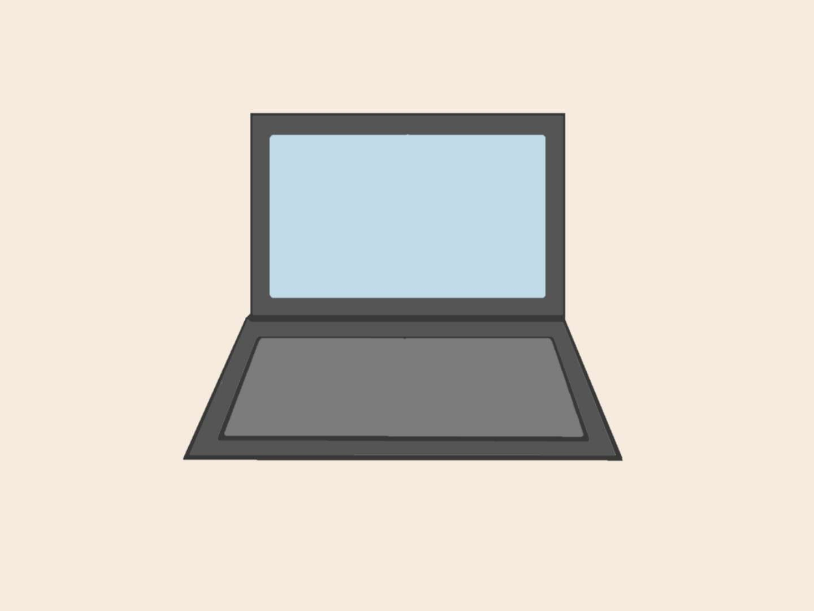

I never consider myself a bad student.
I am those kind of people who would follow rules and go to school on time as what school would require a student.
A normal day of university life is not extremely stressful.
To be honest, with my carefully planned class schedule, I have a lot of free time during the day.
For me, I don't think my issue is the hard limitation of time, at least currently.
It's more of a confusion of not knowing where and when to start my work.
I just feel stuck.
I don't know where to start.
At the same time, I feel stressed if I do not start on the work.
That's just how conflicting I am.
Staring at my laptop, I am a little hesitant, should I start working on the assignments right now?